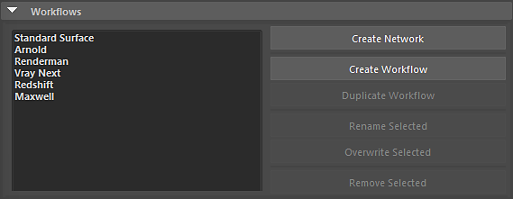
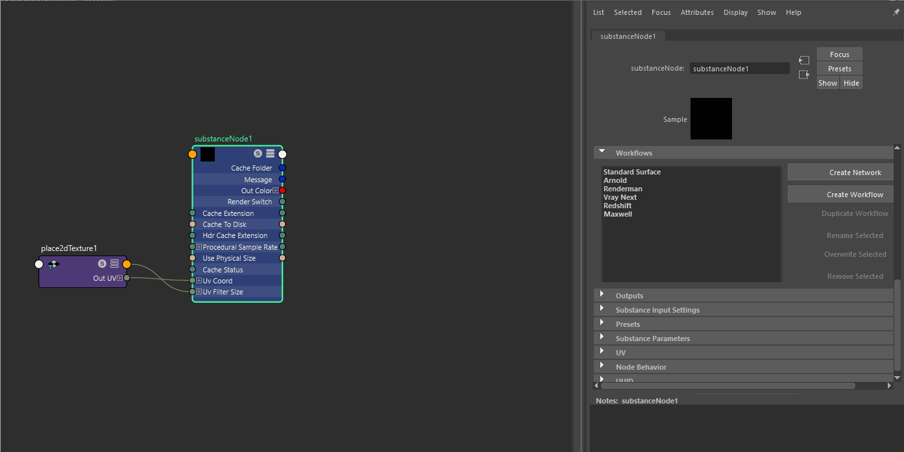
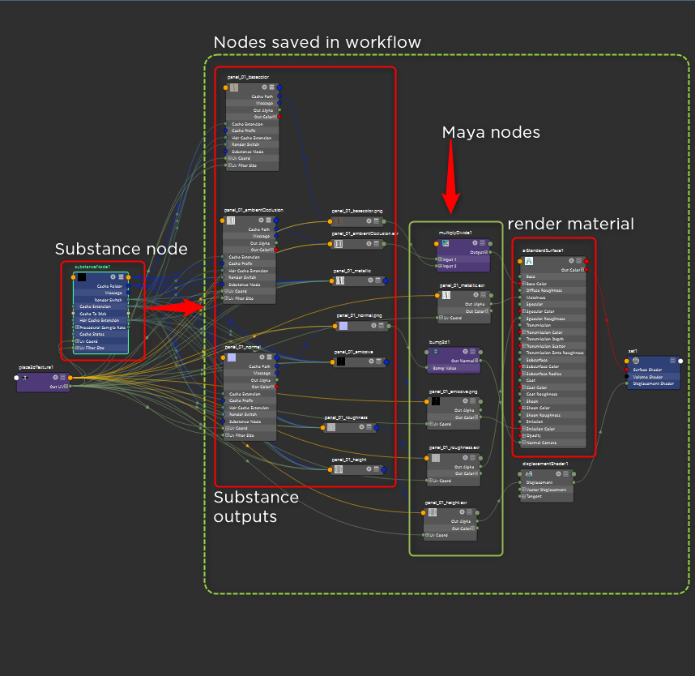

Under Workflows, you can choose or create render presets for Substance outputs. These presets are shader networks for a renderer such as Arnold or Vray.
Windows:
C:\Users\\Documents\maya\2022\substance\workflows\generated
MacOS:
/Users//Library/Preferences/Autodesk/maya//substance/workflows/generated
Linux:
/home//maya//substance/workflows/generated

To use a Workflow, simply choose the preset from the drop-down list and then click the Create Shader Network button.

You can create your own workflow and add it to the Renderer Workflow list. When adding a new workflow, any nodes created after the Substance node will be saved in the workflow. This allows you to create any number of shading nodes to build a complete custom shader network that can be saved as a preset workflow.

You can duplicate a workflow by clicking the Duplicate Workflow button.
You can rename existing workflows as well as overwrite workflows with updated data using the Rename and Overwrite selected buttons.
You can remove existing workflows by using the Remove workflow button.